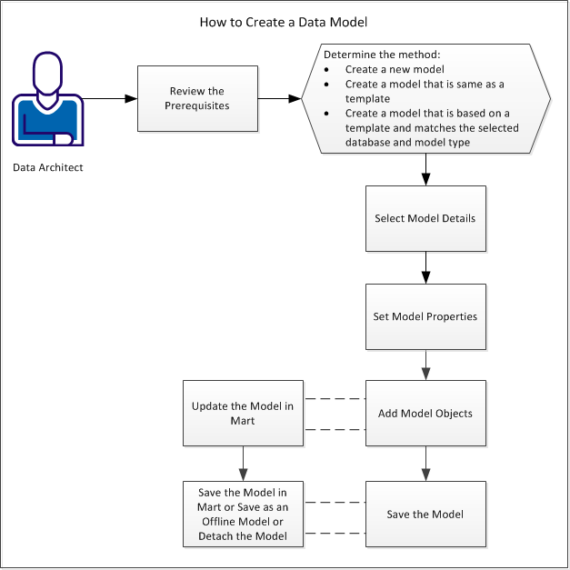

Back to Top
Back to Top
This tutorial describes how Data Architects create or update models in erwin DM and Mart. It describes how to create a data model to design a physical database, describe a project scope, or support data warehousing. Create or update data models using either erwin DM Standard Edition or Workgroup Edition. Working in Workgroup Edition enables collaboration among project managers, data modeling team members, and standards administrators. When you create models in Mart, your team members can work on the entire model or a part of it. You can enforce organizational standards and can standardize metadata across all models.
Use one of the following methods to create a model:
You can also create models using the complete compare and reverse engineering functions. However, this section describes how to create models using the New Model dialog.
The following diagram illustrates the steps to create a model:

Complete the following steps to create a model: